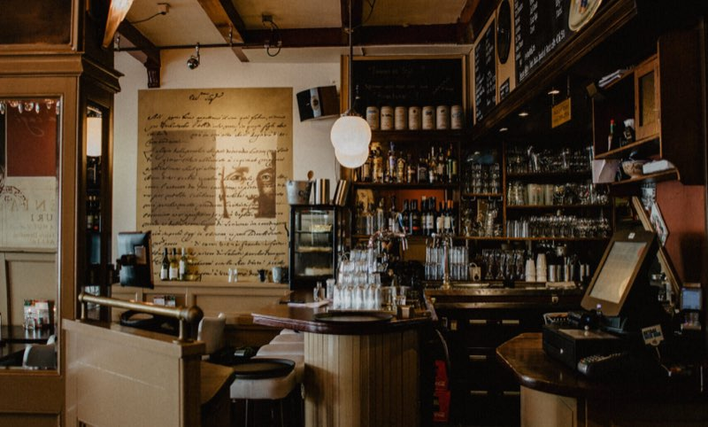

Lunch 11:00–16:30
Classics on white or brown rustic bread, specials, soup and our favourites, such as Scarlatti’s steak.
A varied menu with fresh dishes. Come for lunch, dinner or simply a drink on the Stille Mare.
Tue–Sun open from 10:30 · kitchen 11:00–22:00 · closed on Monday

Classics on white or brown rustic bread, specials, soup and our favourites, such as Scarlatti’s steak.
Starters, main courses and desserts. From September to April also our cheese fondue.
A cold beer or Aperol Spritz with ‘bitterballen’, truffle fries or a platter to share.
Vegetarian or vegan? The menu (PDF) shows which dishes are (or can be made) vegetarian or vegan. Please let us know when ordering if you would like a dish vegetarian or vegan.
Any allergies? Ask for our allergen list.
Looking for high tea or high wine? See our highs